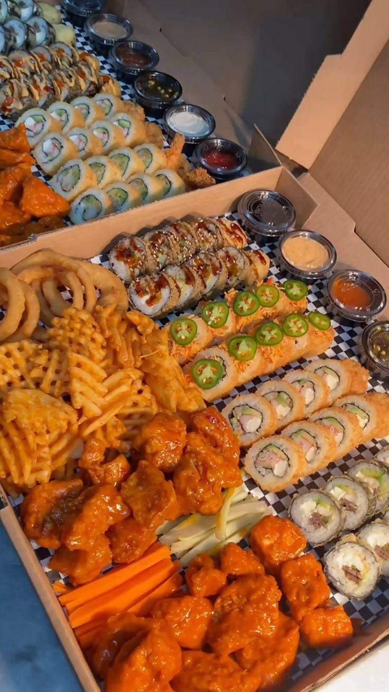
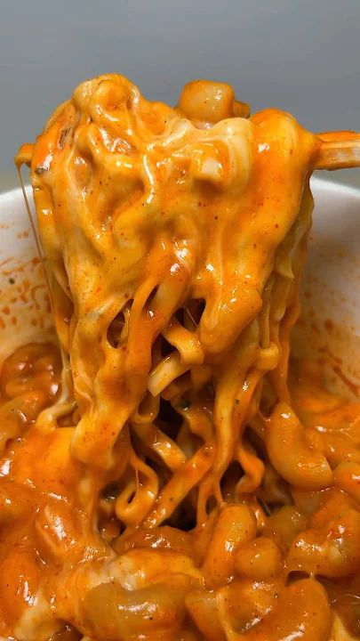
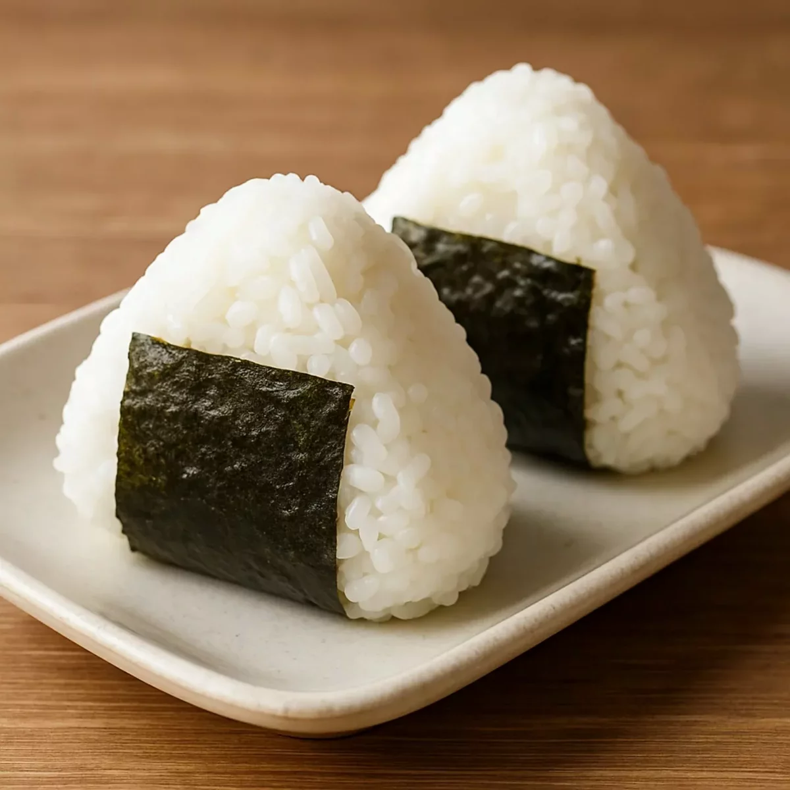

Sushi
El sushi es uno de los platos más famosos de Japón. Se prepara con arroz, pescado y verduras.
VER RECETA


Descubrí los platos más famosos de Japón

El sushi es uno de los platos más famosos de Japón. Se prepara con arroz, pescado y verduras.
VER RECETA
